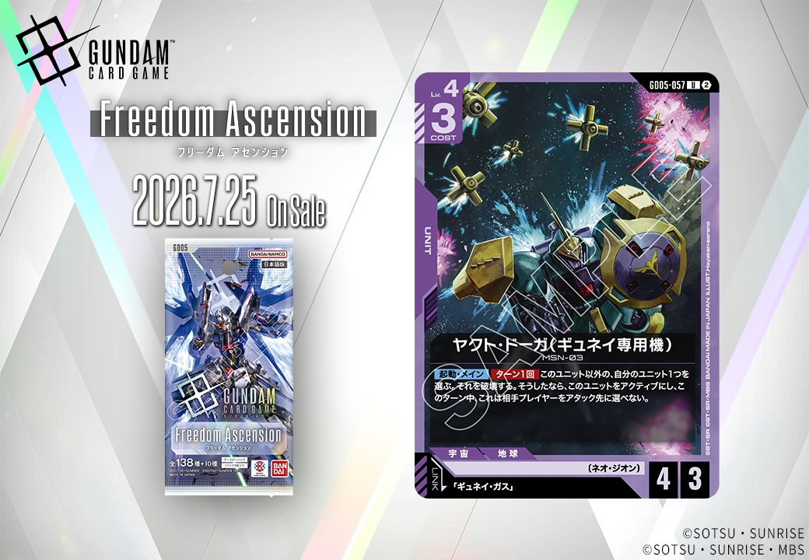

GD05「Phantom Aria(ファントム アリア)」より、同日公開のUNITとPILOTがリンクで結ばれる組合せを紹介します。UNIT「ヤクト・ドーガ(ギュネイ専用機)」(GD05-057)はリンク条件に「ギュネイ・ガス」を指定しており、同日公開のPILOT「ギュネイ・ガス」(GD05-095)とリンクが成立する、紫の2枚セットです。いずれも2026-07-25発売で、両者を揃えることでリンクを前提とした運用が可能になります。

ギュネイ・ガス (GD05-095)
| 色 | 紫 | タイプ | PILOT |
| Lv | 4 | コスト | 1 |
| 補正 AP | 2 | 補正 HP | 1 |
| 特徴 | 〔ネオ・ジオン〕、〔強化人間〕 | ||
効果: 【バースト】このカードを手札に加える。このユニットが〔ネオ・ジオン〕の間、これは《ブロッカー》を得る。(レストにすることでアタック先をこのユニットにする)
ギュネイ・ガス(GD05-095)はコスト1・AP2/HP1の紫パイロットで、【バースト】で手札に戻る軽量カード。搭載ユニットが〔ネオ・ジオン〕の間《ブロッカー》を付与でき、アタック先を受け止める守りの役割を担える。 同日公開の「ヤクト・ドーガ(ギュネイ専用機)」とリンクが成立し、同一ユニット上で運用すれば【リンク中】効果は持たないものの、《ブロッカー》常駐とユニット破壊からのアクティブ化という別個の効果を両立しやすい点で構築上の親和性がある。 2026年7月25日発売。AP2/HP1と打たれ弱いため、《ブロッカー》の身代わりは一度きりになりやすく、HP維持手段との併用が課題となる。



ヤクト・ドーガ(ギュネイ専用機) (GD05-057)
| 色 | 紫 | タイプ | UNIT |
| Lv | 4 | コスト | 3 |
| AP | 4 | HP | 3 |
| 特徴 | 〔ネオ・ジオン〕 | ||
| リンク条件 | 「ギュネイ・ガス」 | ||
効果: 【起動】・メイン ターン1回 このユニット以外の、自分のユニット1つを選ぶ。それを破壊する。そうしたなら、このユニットをアクティブにし、このターン中、これは相手プレイヤーをアタック先に選べない。
ヤクト・ドーガ(ギュネイ専用機)は、COST3でAP4/HP3の紫ユニット。【起動・メイン】で自軍ユニット1つを破壊して自身をアクティブにできるため、サザビーの【アタック時】破壊やクェス・パラヤの【バースト】破壊と並ぶ「ネオ・ジオンの自分のカードの効果で破壊する」起点として機能する。 破壊コストはあるが、ヤクト・ドーガ(クェス専用機)のように味方の効果破壊からトラッシュ復帰するカードを対象に選べば損失を抑えやすい点が噛み合う。 リンク先「ギュネイ・ガス」(GD05-095)を搭載するとネオ・ジオンの間《ブロッカー》が常駐し、自身をアクティブ化する効果と合わせて盤面維持に寄与する。2026-07-25発売。

関連カード
-
 クェス・パラヤ(GD05-094)NEW紫系 — 同色・共通特徴: ネオ・ジオン（新カード）
クェス・パラヤ(GD05-094)NEW紫系 — 同色・共通特徴: ネオ・ジオン（新カード） -
 ヤクト・ドーガ(クェス専用機)(GD05-053)NEW紫系 — 同色・共通特徴: ネオ・ジオン（新カード）
ヤクト・ドーガ(クェス専用機)(GD05-053)NEW紫系 — 同色・共通特徴: ネオ・ジオン（新カード） -
 サザビー(GD05-049)NEW紫系 — 同色・共通特徴: ネオ・ジオン（新カード）
サザビー(GD05-049)NEW紫系 — 同色・共通特徴: ネオ・ジオン（新カード） -
 シャア・アズナブル(GD05-093)NEW紫系 — 同色・共通特徴: ネオ・ジオン（新カード）
シャア・アズナブル(GD05-093)NEW紫系 — 同色・共通特徴: ネオ・ジオン（新カード） -
 アクシズ(GD05-129)NEW紫系 — 同色・共通特徴: ネオ・ジオン（新カード）
アクシズ(GD05-129)NEW紫系 — 同色・共通特徴: ネオ・ジオン（新カード） -
ギュネイ・ガス(GD05-095)NEW紫系 — リンク先（新カード）